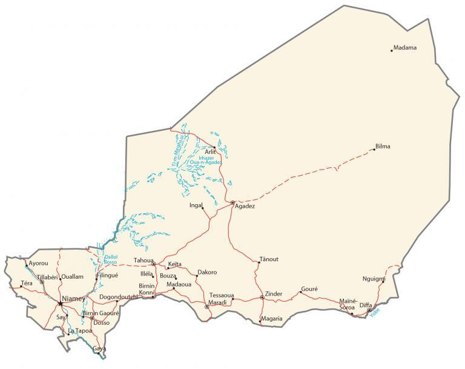

Niger is a landlocked country located in Western Africa. It’s nicknamed the “Frying Pan of the World” because it’s one of the hottest countries with average temperatures from 17°C to 41°C. It’s not only its extreme heat, but it’s because the Sahara Desert covers 80% of its land. Niger lies between 12°N to 23°N above the equator so its climate is dry and hot.
Niamey is the capital and largest city of Niger. Other major cities in Niger are Zinder, Maradi, and Agadez.
Go back home